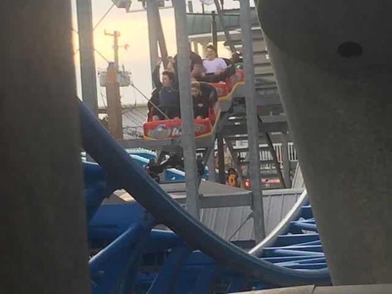

| |
Wild Waves Review

For today's review, we are heading to Playland's Castaway Cove to review Wild Waves. This is....the parks family coaster. It's from Miler, the same company that makes all those kiddy coasters. Except more as a family coaster. But unlike some of their other adult coasters, this one is far more mild. But no need to worry. It's still a fun ride. We hop in the cars, pull down the lap bars (This has the exact same restraints as a kiddy coaster. This ride is quite literally one giant glorified kiddy coaster). And we're off! Go up a small little lifthill. Go around a turn, and go up another lifthill. This is officially a coaster you build in RCT when you run into the park boundary and turn and continue the lifthill. Plus, the rest of the ride really does feel like something one would build in RCT. Going up, you get a good view of the surrounding buildings, Gale Force, and the rest of Playland's Castaway Cove. We reach the top, go through a little straight track before going down a small drop. Nothing too crazy. But fun. Wee! We then rise up and head around a big wide turn. Not too much going on here. Just going around Gale Force. We then go down a second drop, which is also pretty big. This gives some nice speed and things are going good. We then go up a small hill, and....there's actually some airtime here. This is actually a fun ride. We then rise up another hill before hitting the brakes. We go around another wide turn. Only this one is also banked. We then rise up a little before dropping back down again. Go through another hill, which....WEE!! MILD POP OF AIRTIME!!! Yeah. It may not be Scandia Screamer (or Prarie Screamer going by its new name), but it's still fun. We then rise up and hit the brakes again. Go down a curved drop. It's basically a wide turn at a downward angle. But regardless, it still works. We then go through two bunny hops. They have some good airtime. But the really cool aspect are the headchoppers. They are bunny hops that perfectly mirror our own bunny hops. Only above us. So that's cool. We then rise up and glide right into the brake run. So....this is a fun little ride. Is it amazing or anything? No. It's just a small little family coaster that at first glance, looks like a giant glorified kiddy coaster. But all in all, it is a genuinely fun ride. I know Gale Force is the star attraction and the main reason for being at Playland's Castaway Cove. But Wild Waves is still worth a ride. Even on a revisit, I'd probably reride this ride if the line was short enough and I had a wristband. =)
6/10
Location: Playland's Castaway Cove
Opened: 2017
Built by: Miler Coasters
Last Ridden: June 18, 2021
Wild Waves Photos



Home
|